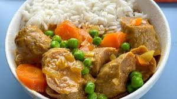

Home
Curried Sausages

Description
An Australian classic, a simple, hearty meal with plenty of vegetables and flavour.
Ingredients
- 600g sausages
- 1 onion (diced)
- 1 carrot (peeled, sliced into rounds)
- 1 tablespoon curry powder (Keens)
- 3 tablespoons flour
- 2 cups (500mL) chicken stock
- 1 teaspoon sugar
- 1 cup frozen peas & corn
Method
- In a pan on medium heat, fry sausages in oil until brown, then remove and slice
- Fry onion in same pan
- Add curry powder to onion & stir for 30sec
- Add flour & stir
- Gradually pour in chicken stock while mixing
- Add carrots, sugar, salt & pepper; stir well
- Add sausage & peas; bring heat down to a simmer
- Serve over mashed potato or rice (cook 2 cups white rice)